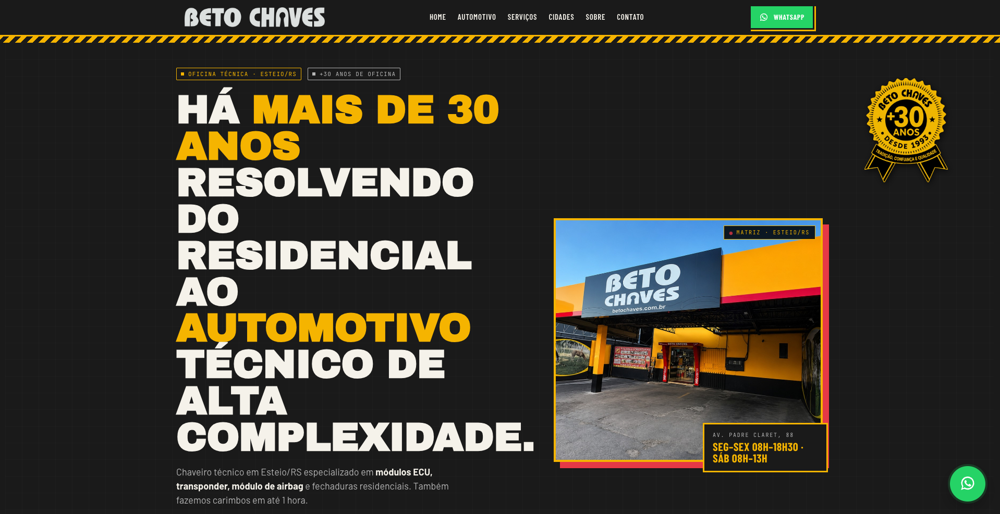

01trabalho entregue
Beto Chaves · landing institucional
Uma presença que transmite confiança antes do primeiro contato.
Uma landing de alta conversão para uma oficina técnica com mais de 30 anos de história. Identidade própria, serviços claros e um caminho direto para orçamento no WhatsApp.
“Nosso site estava desatualizado e não refletia a credibilidade da empresa. Após a reformulação, passamos a contar com um layout moderno que transmite segurança, um fator essencial no nosso ramo, além de reforçar qualidade, organização e confiança aos clientes.”Henrique · Beto ChavesQuero uma presença assim
